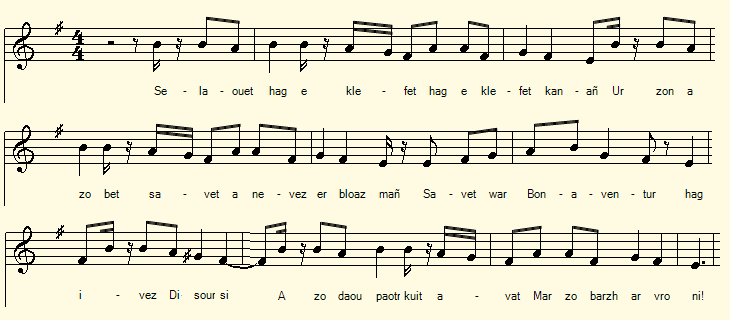
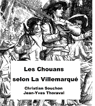

Bonaventur ha Disoursi
Bonaventure et Sans-Souci
Bonaventure and Worry-free
Chant collecté par La Villemarqué dans le 2ème Carnet de Keransquer (p. 40).
Mélodie
"Le Pardon de Saint-Fiacre (Barzhaz Breizh)"
Arrangement Christian Souchon (c) 2017
|
A propos de la mélodie La première strophe ressemble à celle du Pardon de Saint Fiacre du Barzhaz, également composés de vers à 13 pieds à rimes plates. On peut donc penser à cette mélodie pour accompagner ce texte. A propos du texte Tout donne à penser qu'il fut composé par l'un des deux héros de la pièce, "Sans-Souci" lui-même, le nom de guerre du clerc Guillaume Le Guern de Kerbleizec. |
About the tune The first stanza resembles the introduction of the song Saint Fiacre's Fair in the Barzhaz which is also made up of 13-foot rhyming verses. We may suppose that this text was sung to this tune. About the lyrics The internal logic of the text suggests that it was composed by one of the two heroes of the play, "Sans-Souci" (Worry-free) himself, as was dubbed the warrior bard Guillaume Le Guern of Kerbleizec. |
|
BREZHONEG (Stumm KLT) BONAVENTUR HA DISOURSI Pajenn 40 1. Silaouit hag e klefet hag e klefet kanañ, Ur zon a zo bet savet a-nevez ar bloaz- mañ, Savet da Bonavantur hag ivez Disoursi A zo daou baotr kuit avat, mar zo barzh ar vro-ni. 2. Klevet am-eus lavaret marteze a-bell zo Komz dimeus un den yaouank ha Gwilhaou e añv. E lez-añv Bonavantur dre ma oa paotr dilikat Ur paotr tre ha kalonek ha skañv en e zaou droad. 3. Ur paotr tre ha kalonek ha skañv en e zaou droad Egile zo Disoursi, dre ma oa ur paotr mat Dre ma oa ur paotr fou, ur paotr koant en e ziaezoù Ouzhpen maz eo un den tre, nerzhus en e gomzoù. 4. Ned eo ket ivez kouard (kennebeut ul lach) e lagad a zo lemm Evit gwelout flammoù tan ne droe ket e zremm. Dalchmat-ta Bonaventur hag ivez Disoursi! Chwi holl Chouanet yaouank da zont choazh er vro-ni! 5. Da souten Lezenn Jezuz a zo kazi kollet Da souten ar veleien hag ann dud-jentiled. Diouzh an arme impudik eus ar batrioted, Diouzh an arme impudik eus ar batrioted, 6. Dalchomp mat, holl Bretoned! Dalchomp mat holl bremañ! Ha deomp joaius dan armé, dan armé o kanañ : - Bevet ar Gristenien mat katolik ha romen! Heb dale ni welo ar fin deus ar sitoien! Ha mill malloz d'ar Re-zu, hag ivez d'o mec'hie! - Transcrit KLT par Christian Souchon |
FRANCAIS BONAVENTURE ET SANS-SOUCI Page 40 1. Ecoutez, foule assemblée, la chanson que voilà. On l'a faite cette année; le sujet vous plaira: Notre Bonaventure et son ami Sans-souci, Voilà bien, la chose est sûre, deux gars dégourdis! 2. Cela fait longtemps en somme que la renommée Du garçon nommé Guillaume a rempli la contrée, Dudit "Bonaventure", garçon malin sil en fut. Adresse et courage sont ses plus hautes vertus. 3. Jamais un surnom, pardi, ne fut tant mérité. Si ce n'est par Sans-souci, tout aussi bien nommé: Il affronte, superbe, les coups du sort, les malheurs Et la vigueur de son verbe affirme sa valeur. 4. Lardeur qui brûle en leur âme fait briller leurs yeux: Se détourner dune flamme, cest pour dautres queux. Et votre hardiesse, Bonaventure, Sans-souci, Inspire bien des prouesses aux jeunes Chouans dici. 5. O vous de lagonisante Eglise le soutien, Contre une « Patrie » méchante, oublieuse du bien, Une « Patrie » lubrique et son implacable armée, Eglise et noblesse à la fois sont vos obligées. 6. Enfants de notre Bretagne, allons donc, tenons bon! Que tressaillent nos campagnes de mâles chansons! Catholique et romaine, lEglise hèle son troupeau! Et puisse la géhenne, engloutir ses Noirs suppôts Et la folie citoyenne s'apaiser bientôt! Traduction Christian Souchon (c) 2019 |
ENGLISH BONAVENTURE AND WORRY-FREE Page 40 1. O, listen, assembled crowd to my song. It is new. It was composed this year: the subject will please you: On Chouan Bonaventure and his friend Worry-free, who Are two sons of Brittany, and therefore smart lads too! 2. It has been months since I heard for the first time, maybe Of the young man named Guillaume whose fame fills the country, Alias ??Bonaventure, a clever lad if any. Agility or courage, what's his best quality? 3. And never was a nickname so deservedly famed. If not by young Worry-free, who was just as well named: Facing, with equanimity the blows of fate and woe, Whereas the strength of his words proved them to be true. 4. The fire aglow in their hearts make their eyes rarely shine. Turn away from dazzling flames a cowards' eyes, not thine! And your astounding boldness, Bonaventure, Worry-free, Inspire many feats to young Chouans in the country. 5. For being the unfortunate Church's strongest rampart, Against a foul "Nation" and many a vile blackguard, Against a godless "Homeland" and its nefarious army, Are, both, indebted to you Church and Nobility! 6. Sons of our Brittany, let's hold on, O, let's hold on! Hark, how our campaigns are thrilling with our warlike songs! The Catholic and Roman Church now is hailing her flocks! And may fire of Hell, swallow up all those nasty "Blacks" And the mad Citizens' rage soon follow in their tracks! Translation Christian Souchon (c) 2019 |
NOTES:
|
[1] A propos de Bonaventure Voici donc, après Bonaventure et les gendarmes, le deuxième chant consacré au chef chouan gourinois, Guillaume Carré dit Bonaventure, mort en 1816. Ce nom est également évoqué à propos du chant Le citoyen Soufflet dont une partie de l'intrigue se déroule à Keransquer en Roudouallec, dans une remarque indiquant que Bonaventure y avait passé son enfance. Les pièces de l'enquête criminelle le placent au centre de cette mystérieuse affaire. Nous avons vu dans la note [2] qui suit le premier chant que les Archives de la police cantonale du Finistère rendent compte de l'aventure des Gendarmes en présentant Bonaventure comme un lieutenant du chef chouan Jean-François Le Paige De Bar: et en lui associant un certain Le Guern. On connaît beaucoup de choses sur le Paige de Bar, et beaucoup moins sur ses deux acolytes. La Villemarqué s'étant rendu sur place en 1841 put recueillir de la bouche d'anciens chouans des informations sans doute désordonnées, mais dont l'authenticité ne fait aucun doute: Le présent chant est à la gloire conjointe de Bonaventure et de Sans-souci, surnom qui désigne le barde-chouan Guillaume Le Guern, né à Kerbleizec en Gourin en 1774, tué en 1812, dont l'activité est connue seulement à partir de 1797. |
[1] About Bonaventure Here, is, after Bonaventure and the gendarmes, the second song dedicated to the Gourin Chouan leader, Guillaume Carré, alias Bonaventure, who died in 1816. This name is also mentioned, in connection with the song The Citizen Soufflet whose plot partly takes place at Keransquer near Roudouallec, in a remark that Bonaventure had spent his childhood there. The pieces of the criminal investigation bestow on him a pivotal part in this mysterious affair. We have seen in note [2] to the first mentioned song that the Archives of the Finistère cantonal police report on the Gendarmes' adventure by presenting Bonaventure as a lieutenant of the Chouan chief Jean-François Le Paige De Bar: and linking him to a certain Le Guern. We know a lot about Paige de Bar, and much less about his two acolytes. The Villemarqué having gone there in 1841 was able to collect from the mouths of ancient Chouans information delivered in a messy way, but whose authenticity is undoubtable: The song at hand extols the merits of both Bonaventure and Sans-souci (Worry-free), the latter nickname referring to the Chouan-bard Guillaume Le Guern, born in Kerbleizec near Gourin in 1774, killed in 1812, whose warlike feats did not attract attention until 1797 . |
Détails donnés par Fañch Plassard, Chouan, le vicaire de Leuhan, M. Glevarek et M. Kideller, curé et recteur de Leuhan
Information given by Fañch Plassard, Chouan, Leuhan vicar, Mr. Glevarek and Mr. Kideller, Leuhan's chief vicar
|
Page 37/19 "Jétais enfant à 6 ans. Le recteur, en en jetant, m'offrit des bonbons et me dit :
. Bonaventure passe au travers dune bande de 40 soldats, un pistolet à chaque main : « Arrêtez-moi si vous pouvez ! » On jette trois à quatre fois à leau un Tambour fédéré et pacifique à Loperhet:
Fañch : Large chapeau enfoncé sur les yeux brillants & grands et bleus. Le Chouan est défiant, ne se livre quà bon escient, ne raconte que lorsquil est sûr de nêtre pas trahi et quand le curé ly invite et quil reçoit sa caution. (cf. Ar falc'hun). Bonaventure passait pour sorcier : on croyait à ses maléfices : on le prenait pour un envoyé de Dieu. On donnait 600 f. pour dénoncer un prêtre. Pas un ne l'a été. .Bonaventure a une sur à Gourin, mariée à un Chouan. . Il ne tira jamais le billet et se cacha : il commença à chouanner à 19 ans. [en 1794] . Il sappelait Guillou Garrek ou Karrek [Carré]. il se mit à servir sous les ordres de Pech [Le Paige de Bar], qui dépendait de Georges Cadoudal. Page 38/28 . Autre officier : Loeis Koz.
. Il hérite dun fusil à 2 coups du comte de Kersalaün, laissé dans le château de Kersalaün en Leuhan. [Le père?] du Seigneur « meilleur que celui qui y est maintenant. » = Le comte avait laissé son fusil à un domestique qui gardait le château.
. Les troupes pour venir trouver les Chouans au nombre de 4000 . Bonaventure était souvent à cheval.
Page 39 / 29 . Bonaventure : bon chrétien . On était guillotiné pour chanter un de ces chants . On dénonçait ceux qui disaient les prières du soir. Il y avait des espions. On était guillotiné quand on ne chômait pas le jour de « décadi « et quon chômait le dimanche. . Pour prendre son propre nom de saint on était dénoncé et mis en prison. . Bonaventure était très religieux = il disait son chapelet et le faisait dire aux autres. Il disait le soir la prière à haute voix et les autres répondaient. . On indiquait les lieux de combat avec un bâton dans les pardons : on faisait semblant de se disputer. On montrait une baguette et en len menaçant on indiquait dun bout coché. . Les maisons éclairées la nuit, dans les villes nétaient point attaquées, mais les autres pillées : Cétait une lampe intérieure amenant autrui à St Brieuc. . 40 chevaux. Monsieur Bonaventure en tête tue la sentinelle qui criait qui-vive et il fit sortir les Chouans prisonniers. . On cachait les fusils dans des trous de renard pendant la moisson et on les reprenait au premier coup de sifflet qui sentendait à une demi-lieue. Mélange de gaité, de bonne humeur et de convivialité dans Bonaventure (et dans Fañch le Chouan). Bonaventure de gré à gré, fusille le frère de Sans-souci, et Sans-souci, de même, le frère chouan traître de Bonaventure. Page 222 [Informateur non nommé] _ Un prêtre vint annoncer la nouvelle à son vieux père : Le vieillard secoua la tête: "Affirmer mon fils au plus bas qu'eux tous, étant assis sur l'une des portes." Quelques jours après il vit arriver le chien de Georges et se mit à pleurer. |
Page 37/19 "I was a child 6 years old. The vicar, offered me candy and said:
. Bonaventure passes through a band of 40 soldiers, a pistol in each hand: "Stop me if you can! " Three to four times a peaceful drummer of the federal militia was thrown into the water at Loperhet:
Fañch: A broad hat pressed on his big, bright blue eyes. The Chouan is distrustful, does not confide in anybody, unless he is sure he won't be betrayed, or when the priest invites him to do so on his behalf. (cf. Ar falc'hun) Bonaventure was thought to be a sorcerer, able to cast evil spells. But most people considered him a messenger of God. They gave a reward of 600 francs for each denounced priest. Not one ever was. . Bonaventure has a sister in Gourin, married to a Chouan. . He never had to draw lots to be enlisted, because he hid: he became a Chouan when he was 19 [in 1794]. . His name was Guillou Garrek or Karrek [Carré]. He began to serve under the orders of Pech [Le Paige de Bar], a lieutenant of Georges Cadoudal. Page 38/28 . Another officer: Loeis Koz.
. He inherited a two shot rifle which Count of Kersalaün had left in his Castle at Leuhan. [I mean the father] of the present Lord who was "better than the one who is there now. The Count had entrusted his rifle to a servant who kept the castle.
. . The Chouans had to fight against up to 4000 men. . Bonaventure was often on horseback.
Page 39 / 29 . Bonaventure was a staunch Christian. . People were guillotined who were caught singing one of these songs. . People who said their evening prayers were denounced. There were spies everywhere. People were guillotined who did not stop working on "Décadi days" or did stop working on Sundays. . Whoever made use of their own saint's Christian name was denounced and put in prison. . Bonaventure was very religious = he prayed his rosary and made others do the same. In the evening he said the prayer aloud and the others answered. . Information on where attacks were planned was given, using a stick on "pardon" fairs: under the pretence of a fight, one threatened the other with a stick whose end was marked with notches forming a code. . Houses that were lit at night in the cities were not attacked, but the others were ransacked and looted: There was an inside lamp lighting the way in St. Brieuc. . 40 horses. Mr Bonaventure, at the head of a band, killed the shouting sentinel, and brought out the Chouan prisoners. . The rifles were hidden in foxholes during the harvest, and collected as soon as a whistle was blown, which was heard half a league away. Mix of cheerfulness, good humour and conviviality in Bonaventure (and in Fañch the Chouan) Bonaventure by mutual agreement, shot Sans-souci's brother, and Sans-souci, likewise, the traitorous Chouan brother of Bonaventure. Page 222 [ Unnamed informant ] _ A priest came to tell his old father the news: The old man shook his head: "You affirm that my son lies lower than all those, whereas he thrones above the gates." A few days later he saw George's dog arrive and began to cry. |
"Les Chouans selon Villemarqué", un livre au format A4.  Cliquer sur le lien ou sur l'image ci-dessus |